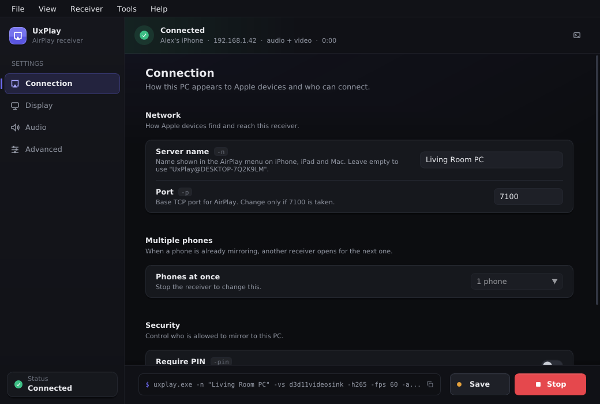
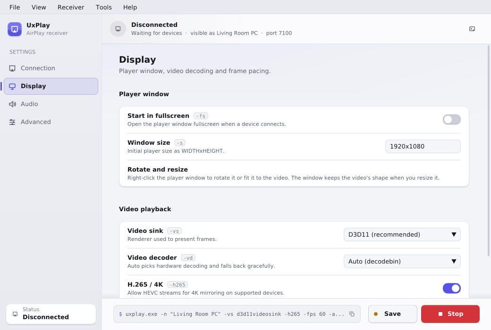

Your iPhone screen,
on your Windows PC.
UxPlay is a free, open-source AirPlay receiver. Mirror an iPhone, iPad or Mac to Windows — no Apple TV, no account, no ads.
Windows 10 or 11 (64-bit) · No Bonjour or iTunes needed

Everything you need to mirror, now is on your screen
A native Windows app that runs the UxPlay receiver for you and shows what is happening in real time.
Screen mirroring & audio
Mirror iPhone, iPad and Mac screens with sound, including H.265 and 4K on supported devices.
Several phones at once
When one phone is mirroring, another receiver appears for the next one — up to four, each in its own window.
Live connection status
See who is connected, from which address, what is streaming and for how long.
Rotate & resize
The player window fits the video's shape. Right-click it to rotate or refit — no reconnection needed.
Errors you can act on
Discovery blocked, a busy port, or a missing component? Get a clear explanation and a Try Again button to help you resolve the issue.
Quiet by default
No console windows. Output goes to a built-in console and a log file you can open any time.
Up and running in three steps
Your PC and your phone need to be on the same Wi-Fi network.
Install UxPlay
Run the installer. Nothing else to install: UxPlay has its own device discovery, so Apple Bonjour and iTunes are not needed.
Press Start
Open UxPlay and press F5 or Start. Allow it through Windows Firewall when asked.
Mirror from your device
On iPhone or iPad open Control Center → Screen Mirroring and pick the name shown in UxPlay.
Built for your desktop
- Light, dark or system theme, with a matching title bar.
- Remembers your setup - window position, theme and every receiver setting.
- Choose where files live: pick the settings and log folders during install or later.
- Keyboard shortcuts for everything: F5 start, Shift+F5 stop, Ctrl+` console.
- Stays out of the way: minimize to the tray while you mirror; close to quit cleanly.

Common questions
More in the Windows guide.
My PC doesn't show up in Screen Mirroring
Check that Windows Firewall allows UxPlay (discovery uses UDP port 5353) and that your PC and phone are on the same network. Guest Wi-Fi often blocks device discovery. Apple Bonjour is not needed; if it is installed, UxPlay uses it instead of its own discovery.
Why are there black bars around the picture?
UxPlay keeps the picture's proportions. The player window resizes itself to match the video, and keeps that shape when you resize it. Right-click the window and choose Fit window to video at any time, or rotate your phone to landscape.
Can two people mirror at the same time?
Yes. Set Connection → Phones at once to 2–4. When a phone is mirroring, a second receiver ("name 2") appears in the AirPlay list for the next phone, each in its own window.
Where are my settings and logs?
By default in %APPDATA%\UxPlay and %LOCALAPPDATA%\UxPlay\logs. You can choose different folders in the installer or under Advanced → Storage. Logs never contain your password.
Can I use the command line?
Yes. Open a Command Prompt in the UxPlay folder and run uxplay.exe with options; it finds its bundled components by itself. Common options:
| Option | What it does |
|---|---|
-n <name> | AirPlay receiver name |
-fs | Start fullscreen |
-p <port> | Base network port (default 7100) |
-vd <decoder> | Video decoder: d3d11videodec, nvh264dec, avdec_h264 |
-as <sink> | Audio output: directsoundsink, wasapisink |